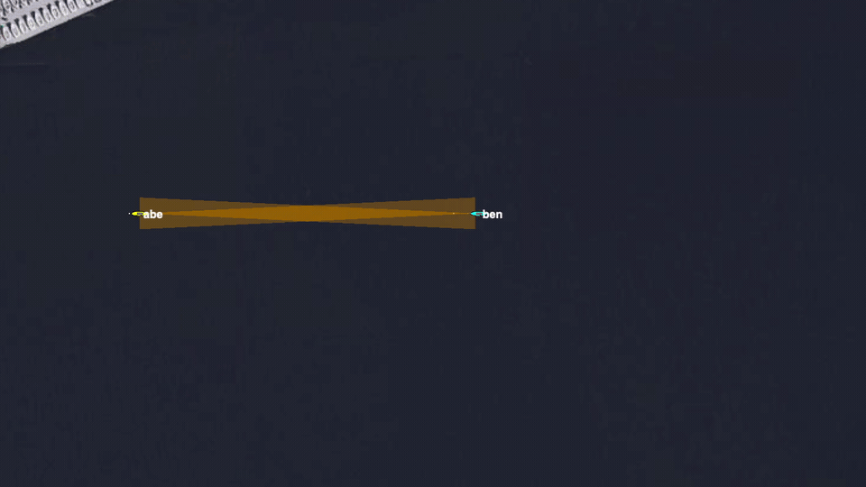
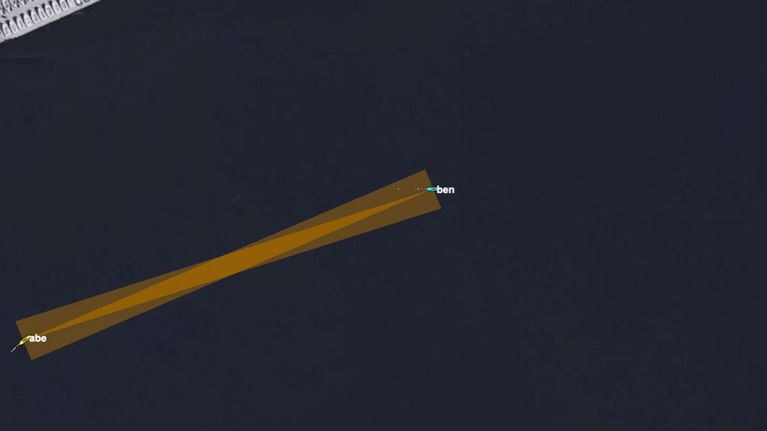
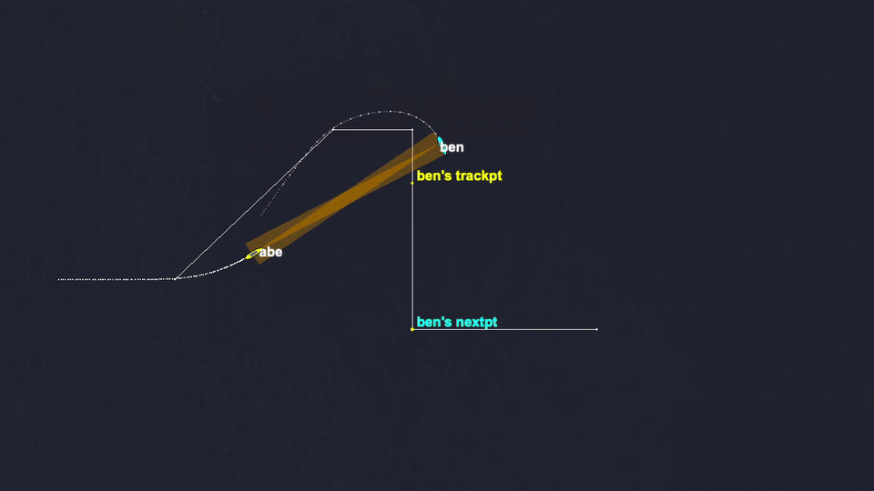

Stem Mission
Baseline scenario context
The stem mission uses two simulated vehicles: abe runs BHV_Convoy while ben creates the breadcrumb trail. Case overlays vary mark queues, following geometry, speed branches, and runtime updates.
Behavior Correctness
Behavior correctness tests for BHV_Convoy. These cases verify convoy mark queues, following geometry, speed-control branches, runtime updates, warning paths, geometry recovery, and invalid parameter handling.
Stem Mission
The stem mission uses two simulated vehicles: abe runs BHV_Convoy while ben creates the breadcrumb trail. Case overlays vary mark queues, following geometry, speed branches, and runtime updates.
Examples



Case Matrix
static_convoy_pass
Baseline convoy following with 5 meter mark spacing and an 80 meter queue cap.
fine_mark_spacing_pass
Shrinks inter_mark_range and grades a larger mark queue.
coarse_mark_spacing_pass
Expands inter_mark_range and grades a smaller mark queue.
short_mark_queue_pass
Shrinks max_mark_range and grades queue trimming through MXRNG and TLEN.
long_mark_queue_pass
Expands max_mark_range and verifies the configured cap is reported.
tight_radius_pass
Shrinks waypoint capture radius while preserving stable convoy following.
wide_radius_pass
Expands waypoint capture radius while preserving stable convoy following.
cruise_speed_pass
Uses explicit cruise_speed and verifies the chaser settles into the requested speed band.
cruise_speed_cap_warn_pass
Sets cruise_speed above spd_max and expects a warning while keeping the mission runnable.
safety_range_autoadjust_warn_pass
Gives inconsistent safety ranges and expects auto-adjust warning behavior.
safety_off_bad_ranges_pass
Disables range safety and verifies the same inconsistent ranges remain runnable.
tailgating_speed_slow_pass
Forces tailgating behavior and grades slower physical chaser speed.
lagging_speed_fast_pass
Forces lagging behavior and grades faster physical chaser speed.
estop_speed_zero_pass
Forces emergency-stop behavior and grades near-zero chaser speed.
range_aliases_pass
Uses the range_estop, range_tailgating, and range_lagging aliases.
nm_radius_zero_pass
Verifies zero nm_radius is accepted without breaking queue following.
view_point_post_pass
Verifies BHV_Convoy posts visual breadcrumb points through VIEW_POINT.
angled_entry_pass
Starts the chaser southwest of the convoy line with a northeast heading and grades recovery into the target's breadcrumb queue.
cross_track_entry_pass
Starts the chaser well below the target leg with a northward heading and grades lateral convergence back toward the convoy line.
opposite_heading_recover_pass
Starts the chaser behind the target but pointed west, then grades recovery into eastbound convoy following.
close_offset_tailgate_pass
Starts the chaser close and laterally offset from the target, then grades tailgate-safe convergence into the convoy queue.
lead_right_turn_pass
Replaces the target's straight waypoint leg with a right-angle dogleg and grades convoy following after the target has turned north.
lead_s_turn_pass
Starts the chaser closer to an enlarged target S-turn route with a diagonal first leg, uses a shorter and finer breadcrumb trail, then grades that the target has pulled into the lower leg, the chaser is tightly tracking inside the bend, and the active convoy breadcrumb has advanced through the turn.
short_queue_turn_pass
Combines a right-angle target turn with a shortened max_mark_range, grading queue trimming during non-straight contact motion.
slow_follower_pass
Uses conservative speed multipliers and grades slower physical chaser speed.
fast_follower_pass
Uses aggressive speed multipliers and grades faster physical chaser speed.
runtime_inter_mark_coarse_pass
Changes inter_mark_range through CONVOY_UPDATES.
runtime_max_mark_short_pass
Changes max_mark_range through CONVOY_UPDATES.
runtime_cruise_speed_pass
Changes cruise_speed through CONVOY_UPDATES and grades chaser speed.
runtime_cruise_cap_warn_pass
Applies high cruise-speed/runtime speed-cap updates and expects warning-safe operation.
runtime_estop_speed_zero_pass
Raises runtime safety ranges through CONVOY_UPDATES so the chaser enters emergency-stop behavior and grades near-zero physical speed.
runtime_bad_update_recover_pass
Sends a malformed runtime mark-spacing update, then verifies a later valid update recovers without a behavior error.
no_extrapolate_pass
Verifies clean following with contact extrapolation disabled.
missing_contact_warn_pass
Uses a missing contact with on_no_contact_ok=true and expects warning-only behavior.
missing_contact_fail
Uses a missing contact with on_no_contact_ok=false and expects failure.
missing_contact_param_fail
Omits contact with on_no_contact_ok=false and expects failure.
bad_inter_mark_range_fail
Negative inter_mark_range should be rejected and the mission should fail.
bad_max_mark_range_fail
Negative max_mark_range should be rejected and the mission should fail.
bad_radius_fail
Negative radius should be rejected and the mission should fail.
bad_nm_radius_fail
Negative nm_radius should be rejected and the mission should fail.
bad_spd_slower_fail
Rejects spd_slower outside its accepted range.
bad_spd_faster_fail
Rejects spd_faster outside its accepted range.
bad_spd_max_fail
Rejects zero spd_max, which would make the convoy speed cap invalid, and expects mission failure.
bad_rng_estop_fail
Negative rng_estop safety range should be rejected and the mission should fail.
bad_rng_tgating_fail
Rejects a negative rng_tgating safety range and expects mission failure.
bad_rng_lagging_fail
Rejects a negative rng_lagging safety range and expects mission failure.
bad_rng_safety_fail
Malformed rng_safety should be rejected and the mission should fail.
bad_cruise_speed_fail
Rejects a negative cruise_speed configuration and expects mission failure.